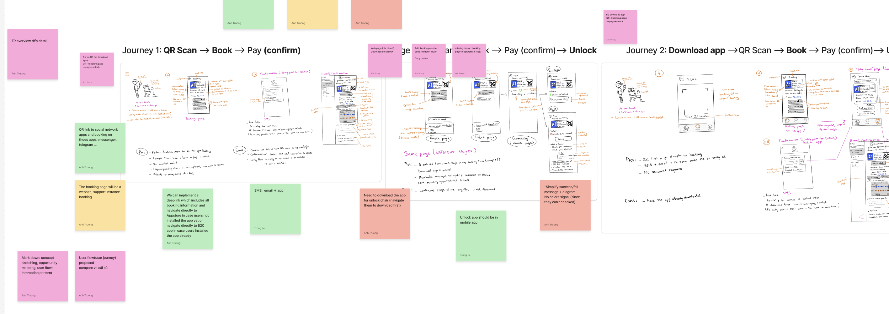
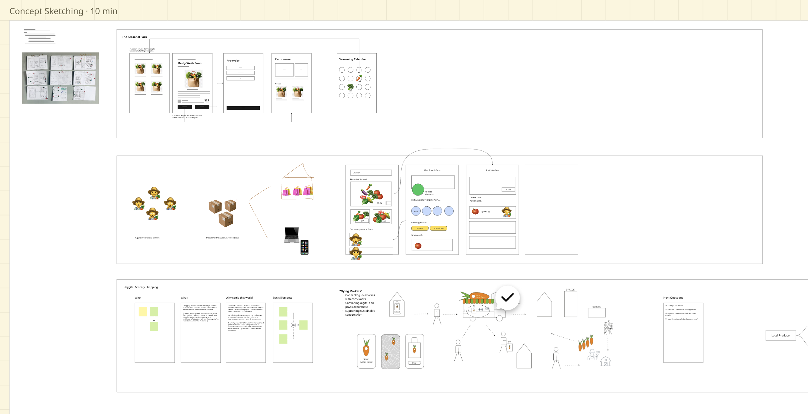
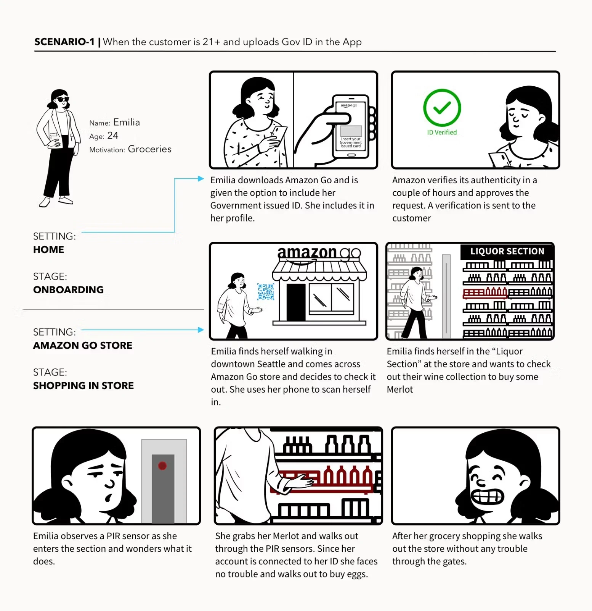

Develop
Solutions
& Ideate
From problem to idea to decision, without jumping to screens.

Winnie
Nguyen
Problem to idea
to decision
Opportunity Tree
Flow Review
Crazy 8s
Concept Sketching
Storyboarding
Concept Validation
Prioritisation
The best solution is
almost never the first one
“I have the problem. Let me design a solution.”
“I have the problem. Let me map the opportunity space, then generate solutions across it.”
No evaluation
while generating
Opportunity
Tree Mapping
Before you generate solutions, get clear on what opportunities exist.
Outcome, opportunities,
solutions
Solutions live under
opportunities
Outcome
Your problem statement, one root node
Opportunities
User needs and pain points, spaces where a solution could live
Solutions
Specific ideas that address one opportunity
Users struggle to [need] because [barrier].
Five steps to
a tree
A clean tree, Disney
Here’s one I built
at Go1

Every friction point
is a candidate opportunity
Map your tree.
Use your own problem statement as the outcome.
Opportunities
Write at least 5 user needs. No solutions yet.
Solutions
Add 2–3 solutions under your best 3 opportunities.
Flow link
Connect each friction point to an opportunity. Write your direction.
Read the tree
Find the fullest and emptiest branch. Share your direction.
Crazy 8s
You have a map and a direction. Now go wide, fast.
Crazy 8s:
go wide, fast
A timed sketching exercise: fold a sheet into eight panels and draw eight different ideas in eight minutes.
The first idea is rarely the best one.
The time limit stops you from polishing and forces you past the obvious.
After you have a direction from the opportunity tree, and before you pick a concept to sketch in detail.
Suitable for a design workshop.
Eight ideas,
eight minutes
What the output
looks like

Go wide with Crazy 8s.
Pick one opportunity from your tree and use your flow direction as the anchor.
Fold and pick
- Fold an A4 sheet into 8 panels.
- Choose one opportunity from your tree.
Sketch 8 ideas
- One idea per panel, label each one.
- No erasing, no perfecting.
- Aim for eight approaches, not eight variations.
Circle the best two
- Circle two panels worth developing.
- Share one with the class.
Concept
Sketching
Make the most promising ideas visible enough to evaluate.
Concept sketching:
make an idea visible
A rough drawing of one idea that shows its core structure, key interaction and what makes it different.
A sketch can be read, questioned and tested in minutes. It exposes unclear logic before any time goes into a prototype.
After Crazy 8s or the opportunity tree, once you have a promising idea, and before you validate or prototype it.
A thinking tool,
not a wireframe
Four steps,
one moment
Two journeys,
one concept

Three concepts,
10 minutes

Make one idea visible.
Use the strongest solution from your tree, or your best Crazy 8s panel.
Sketch the key moment
- Draw one screen or one interaction.
- Label every component. Don’t polish.
- Finish: “This works because…”
Keep the sketch
- You will use it to practise the validation checks.
- If sketching killed the idea, that is the system working.
Storyboarding
Extend one concept across time to see where the flow breaks.
Storyboarding:
extend an idea across time
A short sequence of 3–5 panels that follows one user from context and trigger, through action, to outcome and emotion.
One screen can look good and still fail as a flow. A storyboard shows where the experience breaks and how the user feels at the end.
After a concept has survived the first checks, and before you build a prototype.
Extend a concept
across time
Context
Trigger
Action
Outcome
Emotion
Follow Allison

Follow Emilia

Persona and setting
Name, age, motivation, and where each panel takes place.
Stage labels
Onboarding at home, then shopping in store.
One sentence per panel
Each panel has a caption saying what the user does.
Ends on emotion
She walks out with no trouble, smiling.
Concept
Validation
Before a prototype, check the logic holds.
Validate small,
before you build big
30-second cold read
Show a sketch for 30 seconds, hide it, then ask what it does and who it is for.
After the concept sketch, before you add any detail.
If a stranger cannot read it, a user will not either. It exposes missing labels and an unclear value.
Concept comparison
Show two concepts side by side and ask which one the person would use, and why.
You have two or more directions and cannot decide between them.
People judge a choice more easily than a single idea. The reasons matter more than the vote.
Storyboard walkthrough
Walk someone through the storyboard panel by panel and ask what they expect to happen next.
The concept spans several steps and the storyboard is drawn.
One screen can look good and still fail as a flow. A wrong expectation marks the broken step.
Rationale test
Say “This works because…” aloud in one sentence, without qualifying words.
Before you show the concept to anyone.
Words like but, if and assuming hide assumptions. It costs nothing and takes two minutes.
Find the riskiest
assumption
Prioritisation
Not all concepts deserve the same investment. Choose deliberately.
Effort against impact
Quick wins
Strategic bets
Fill-ins
Traps
AI-assisted
workflow
Use AI to widen and connect your work. You still decide.
Human first,
AI second
The average idea, no source. You anchor on idea #1.
You generate. AI challenges and links. Every output cites an artifact. You decide.
Every output is
the next input
No parent, no solution. Give every item an ID that points back to its source.
A repeatable
loop, you review
Ask what all
eight share
Your eight Crazy 8s panels
What assumption do all 8 share? Give me 3 ideas that break it.
Shared assumption and 3 challengers
Two concepts, pressure-tested
- 01Prioritise your tree on the matrix, pick two
- 02Run Crazy 8s on your chosen opportunity
- 03Sketch both concepts with “This works because…” (second contradicts the first)
- 04Assumption audit and 30-second test on each
- 05Share both with your PO or a peer, note the response
- 06Pick the survivor and storyboard it (Trigger, Action, Outcome)